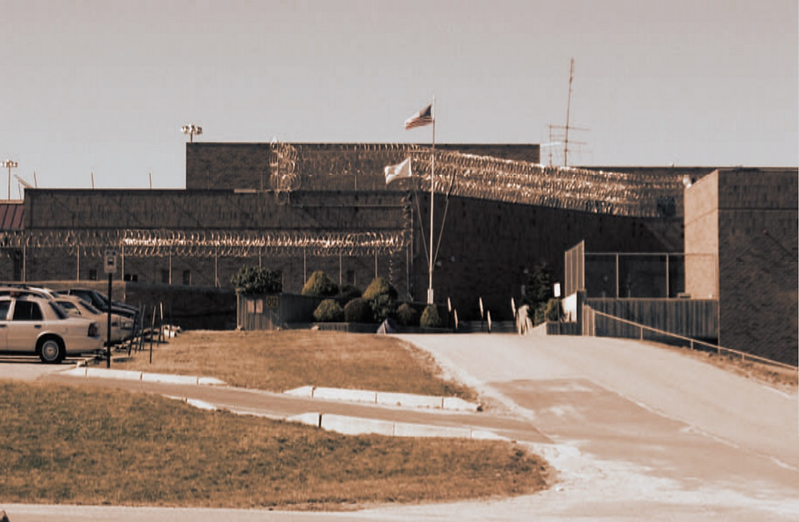
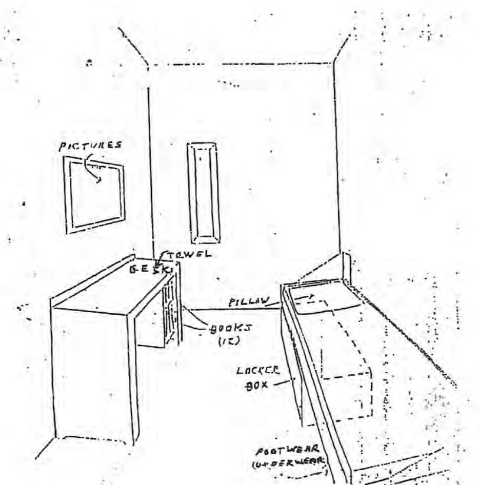
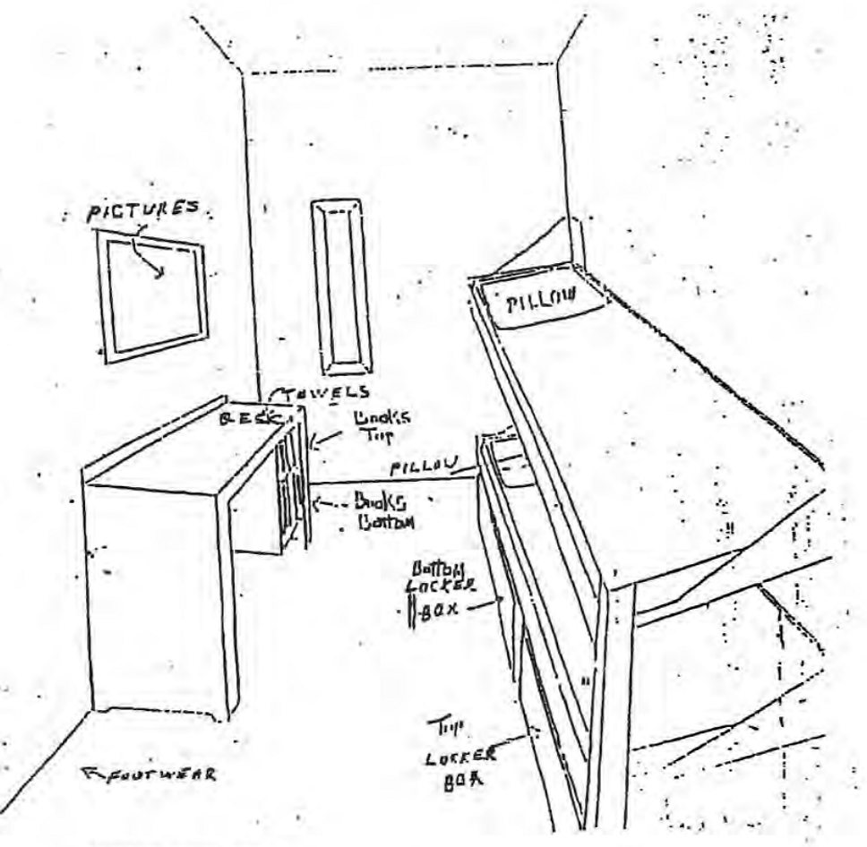
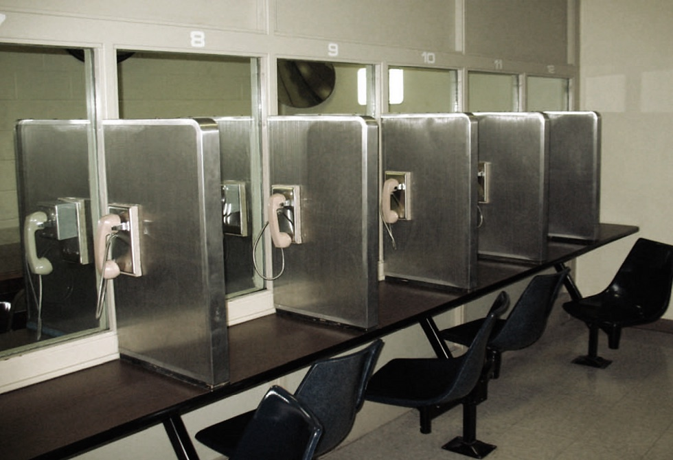

What is High Security?

The High Security Center (Photo courtesy of RIDOC)
The High Security Center, also known as High Side, is a "supermax" prison run by the Rhode Island Department of Corrections (RIDOC). Built in 1981, it is the most restrictive RIDOC facility, even more so than Maximum Security.
There are around 85-90 prisoners in High Security at any given time. At $200,000 per detainee per year, it is one of the most expensive prisons to run in the United States per capita.
What is a Supermax Prison?
Supermax prisons are facilities or units designed to isolate prisoners from the general prison population and are a recent phenomenon. Before 1980, there were very few supermax prisons in the U.S. or the world. By 2004, 44 states had supermax facilities.
Recently, several states have closed or repurposed their supermax facilities, recognizing that they are ineffective at controlling or rehabilitating their populations.
Indefinite, Long-Term Solitary Confinement
Virtually all prisoners in High Security are in solitary confinement, also known as restrictive housing or segregation. Depending on their classification, they spend 22-24 hours per day inside an 8-by-10-foot cell:
-
~5% of High Security residents are in Disciplinary Confinement and get one hour out-of-cell each weekday, excluding weekends and holidays. They are not allowed any visits and can receive up to one 10-minute phone call to immediate family every month that they remain booking-free (a booking is an allegation of breach of prison rules.). Their cells consist of a bed, a sink, and a toilet. Their cells have no desk and no chair; some have no mirrors.
-
~35% are in Administrative Confinement, where they receive one hour out-of-cell each weekday, excluding weekends and holidays. They are allowed one no-contact visit and one phone call each week.
-
~50% are in Transitional Confinement, where they receive two hours out-of-cell each weekday, excluding weekends and holidays. They are allowed one no-contact visit and two phone calls each week.
-
~10% are in the Residential Treatment Unit, a separate unit for prisoners with serious and persistent mental illness.
Solitary confinement status is reevaluated every 90 days.
As of March 2020, at least eight prisoners had been in Administrative Confinement (23-24 hours in-cell each day) in High Security for over a year. One had been in Administrative Confinement for almost three years.

Single-bunk layout. Note that not all cells have desks.
(Sketches courtesy of RIDOC)

Double-bunk layout with desk.
High Security is loud and bright, even at night: Metal doors constantly opening and closing, people screaming in their cells, banging, slamming, and clanking. Many cells have cameras that are on 24/7.
Out-of-cell time occurs in outdoor chain-link cages.
Isolation from Loved Ones

No-contact visiting area at High Security (Photo courtesy of RIDOC)
Prisoners are not allowed any physical contact with family. Pre-COVID, some prisoners were entitled to in-person visits with loved ones. These visits all occurred behind glass (no-contact visits). Other prisoners are not entitled to any in-person visits at all, even through glass.
Some detainees are allowed phone calls to the outside world. Those in the most restrictive housing modules (mods) are only allowed one 10-minute phone call for each month that they are booking-free. (A booking is an allegation of breach of prison rules.)
Inadequate Opportunities for Personal Growth and Rehabilitation
Prisoners in High Security (excluding those in the Residential Treatment Unit) have limited access to programming, education, or humane treatment. This facility limits the potential for prisoners to grow and rehabilitate themselves.